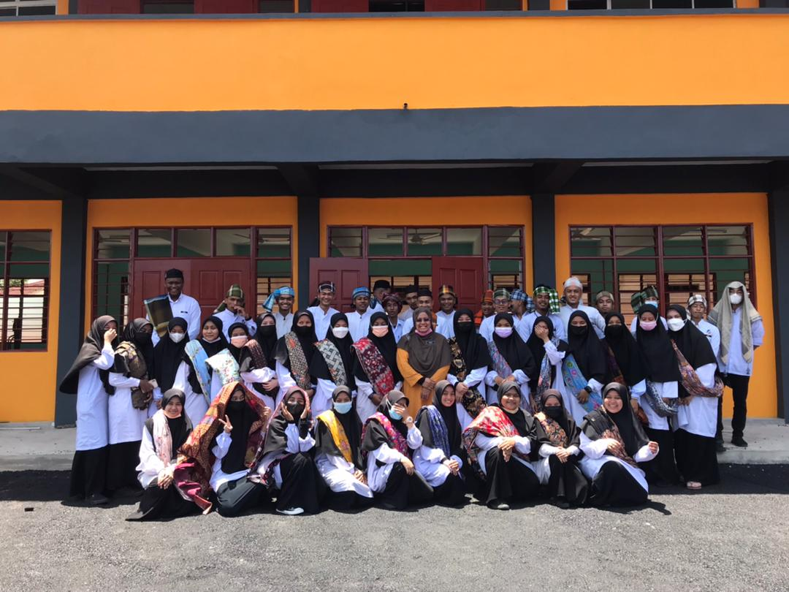
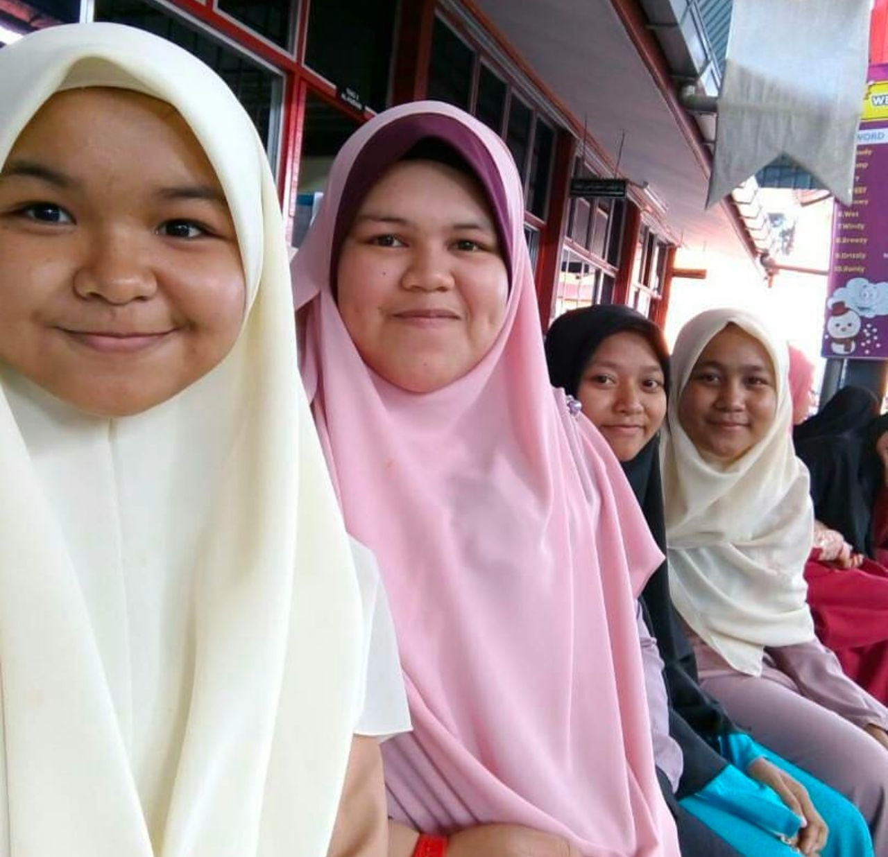
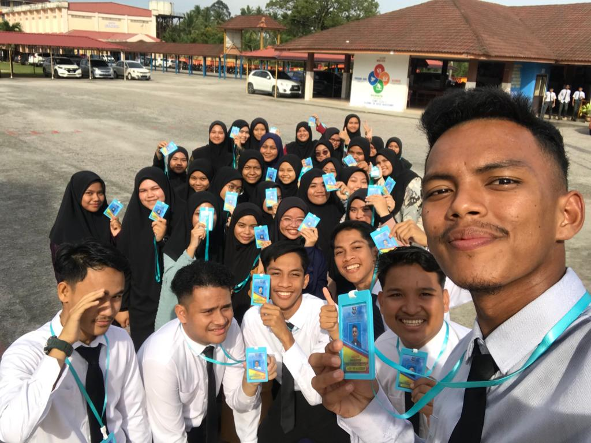
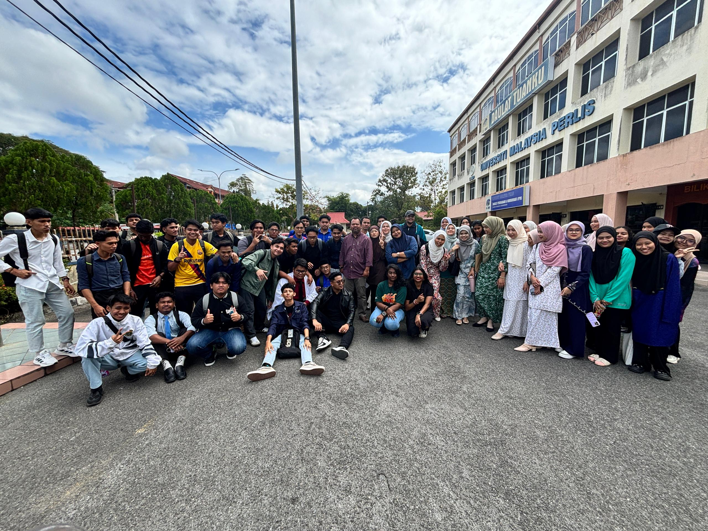

📚 My Education Journey
📘 Primary School

SK Banggu | Tahun 1-6 (2011 - 2016)
MEMORY SKB
📙 High school

SMU(A) Al-YUNUSIAH| Tingkatan 1-5 (2015 - 2019)

form2
📗 Pre-university STPM

PRA-UNIVERSITI SMK Long Yunus | 2021 - 2024
EID MUBARAK 6HAMKA
🎓 Universiti

Universiti Malaysia Perlis (UniMAP)
Bachelor degree in Interactive Media Technology | 2024
My Journey With My friends